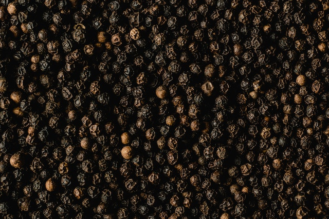

Ceylon Pure Black Pepper Whole 100% Natural Organic Sun-dried Real Spice Taste.
Condition :New
Quantity: 1
Price :
$4.99 - $259.99
Free local pickup from MORAWAKA, SRI LANKA. |
See details
Shipping:
FREE Economy Shipping |
See details for shipping
International shipment of items may be subject to customs processing and additional charges.
Located in: MORAWAKA, SRI LANKA.
Delivery:
Estimated between 11-23 Business days.
Please allow additional time if international delivery is subject to customs processing.
Returns:30 Day returns | Buyer pays for return shipping |
See details- for more information about returns
Payments:
Description
World's most versatile and popular spice. Black Pepper comes from the evergreen climbing tree Piper nigrum. Sri Lankan Pepper has a higher Piperine content, which gives it superior quality and pungency. Known for its distinct pungent flavor and aroma used mainly in savory dishes, but also accentuates fresh produce.
Black pepper is a good source of manganese and iron, which are important for the body to function correctly.
Components of black pepper are often added to mouthwashes and gargles used to treat sore throats.
Black pepper is a stimulant that can stimulate various parts of the body such as the heart, kidneys, circulation, and stomach.
When foods are eaten with black pepper, the body can absorb valuable vitamins and nutrients from the food much easier.
Black pepper has been used to treat fatigue and tiredness.
It stimulates the appetite and has been used to treat anorexics and people with eating disorders.
A strong black pepper and mint tea will help clear chest and lung infections and bring up unwanted mucous and phlegm.
It is said to promote mental clarity, which is useful when studying.
It can help clear up colds, viral infections, and flu when prepared in a tea.
Black pepper helps to prevent gas and flatulence.
It induces urination, which is good when the kidneys are not functioning properly.
Black pepper is a powerful anti-oxidant.
It is antibacterial, which was useful for meat preservation before the time of refrigerators.
Black pepper helps to break down and digest fats and meat proteins much more easily, as it induces the production of saliva and gastric juices needed for digestion in the stomach.